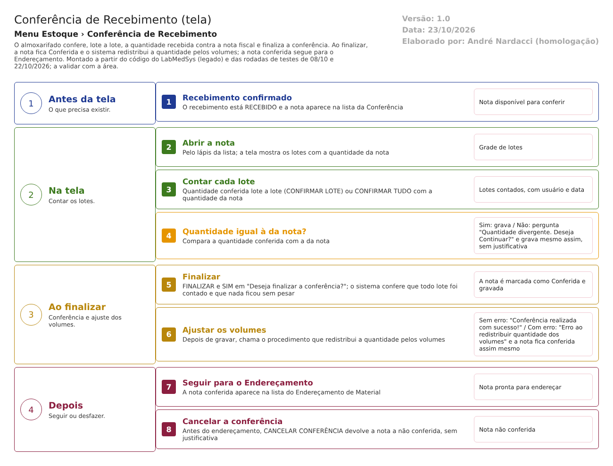

Fluxograma no arquivo 03-conferencia-de-recebimento.fluxo.json, em 4 fases. Etapas, na mesma ordem do arquivo:
- Etapa 1. Recebimento confirmado: O recebimento está RECEBIDO e a nota aparece na lista da Conferência (Antes da tela).
- Etapa 2. Abrir a nota: Pelo lápis da lista; a tela mostra os lotes com a quantidade da nota (Na tela).
- Etapa 3. Contar cada lote: Quantidade conferida lote a lote (CONFIRMAR LOTE) ou CONFIRMAR TUDO com a quantidade da nota (Na tela).
- Etapa 4. Quantidade igual à da nota? (decisão): Sim: grava / Não: pergunta "Quantidade divergente. Deseja Continuar?" e grava mesmo assim, sem justificativa (Na tela).
- Etapa 5. Finalizar: FINALIZAR e SIM em "Deseja finalizar a conferência?"; o sistema confere que todo lote foi contado e que nada ficou sem pesar (Ao finalizar).
- Etapa 6. Ajustar os volumes: Depois de gravar, chama o procedimento que redistribui a quantidade pelos volumes (Ao finalizar).
- Etapa 7. Seguir para o Endereçamento: A nota conferida aparece na lista do Endereçamento de Material (Depois).
- Etapa 8. Cancelar a conferência: Antes do endereçamento, CANCELAR CONFERÊNCIA devolve a nota a não conferida, sem justificativa (Depois).
Saídas alternativas: CANCELAR CONFERÊNCIA (antes do endereçamento) devolve a nota a não conferida; VOLTAR sai sem gravar; NÃO nas confirmações não grava.
Situações e histórico
Situações
- Entrada: nota de um recebimento já confirmado (dalNotaFiscal.cs:803).
- Não conferida (CONFERIDO = NÃO): permite contar lotes, confirmar tudo, finalizar (conferencia_ed2.aspx.cs:63-64).
- Conferida (CONFERIDO = SIM): a tela vira consulta; só aparece CANCELAR CONFERÊNCIA, se a nota não foi endereçada (conferencia_ed2.aspx.cs:54-62). No recebimento, o status passa a CONFERIDO (Recebimento.cs:161).
- A nota conferida segue para o Endereçamento de Material (enderecamento_lst.aspx.cs:127-128).
O que grava na trilha de auditoria (histórico)
- Cada contagem de lote chama o histórico de alteração do lote (bllNotaFiscalItemLote.cs:41-60), objeto TBL_NF_ITEM_LOTE.
- A marcação da nota como conferida chama o histórico de alteração da nota (bllNotaFiscal.cs:59-90, objeto TBL_NOTA_FISCAL_ESTOQUE).
O que não grava
- A divergência de quantidade não gera registro à parte: o valor conferido e o valor da nota ficam no lote, sem motivo (RN-EST-048).
- O erro do ajuste dos volumes não é registrado: a nota fica conferida e a causa se perde (DV-EST-015).
- Cancelar a conferência não pede justificativa; se a alteração entra no histórico automático da nota, é ponto para validar em tela.
Dados
Tabelas do banco
| Tabela | Colunas principais | Chaves e ligações | Fonte |
|---|---|---|---|
| TBL_NOTA_FISCAL (no código, TBL_NOTA_FISCAL_ESTOQUE) | CONFERIDO, ENDERECADO, ID_RECEBIMENTO | O código usa nome diferente do projeto de banco (ponto para validar com o DBA) | TBL_NOTA_FISCAL.sql; dalNotaFiscal.cs:803 |
| TBL_NF_ITEM_LOTE | QTD_LOTE, QTD_CONTAGEM, ID_USUARIO_CONTAGEM, DATA_CONTAGEM, DIVERGENCIA, ID_USUARIO_AUTORIZACAO, DATA_AUTORIZACAO, TXT_OBS_AUTORIZACAO | Liga ao item da nota; as colunas de autorização da divergência existem, mas esta tela não as preenche | TBL_NF_ITEM_LOTE.sql:1-23 |
| TBL_NF_ITEM_LOTE_VOLUME | COD_VOLUME, NUM_VOLUME, QTD_VOLUME, QTD_SALDO | Volumes do lote, redistribuídos por pAjustaVolume |
TBL_NF_ITEM_LOTE_VOLUME.sql; pAjustaVolume.sql |
| TBL_PESAGEM | PESAGEM_CONCLUIDA, ID_NF_ITEM_LOTE | Pesagem de entrada dos itens que a exigem | dalNotaFiscalItemLote.cs:659-680 |
| Tabela de histórico | Objeto, campo, valor antigo, valor novo, usuário, data | O projeto de banco traz TBL_LOG_ALTERACAO (confirmar com o DBA) | TBL_LOG_ALTERACAO.sql |
Observação: a tabela do lote tem as colunas DIVERGENCIA, ID_USUARIO_AUTORIZACAO, DATA_AUTORIZACAO e TXT_OBS_AUTORIZACAO, que é exatamente o que a versão antiga da tela preenchia (conferencia_ed.aspx.cs:255-310). A tela em uso não preenche nenhuma delas.
Leituras e gravações em outros módulos
| Módulo | O que é lido ou gravado | Meio | Fonte |
|---|---|---|---|
| Principal | Fornecedores (lista de filtro) e usuário logado | Sinônimo de banco (GBL_PJ) e sessão | conferencia_lst.aspx.cs:34-43 |
| Estoque (Central de Pesagem) | Pesagem de entrada dos itens que a exigem | Mesma base | conferencia_ed2.aspx.cs:275-276 |
| Estoque (Endereçamento) | A nota conferida passa a aparecer na lista | Mesma base | enderecamento_lst.aspx.cs:127-128 |
| Controle da Qualidade | Nada é enviado | Não se aplica | Sem fonte |